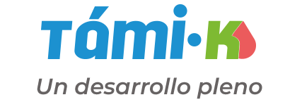
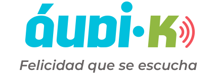

NUESTROS SERVICIOS

Támi-k es un programa integral de tamiz metabólico para la detección e intervención temprana de enfermedades metabólicas.

Áudi-k es un programa integral de tamiz auditivo que permite la detección e intervención oportuna de diferentes grados de hipoacusia.